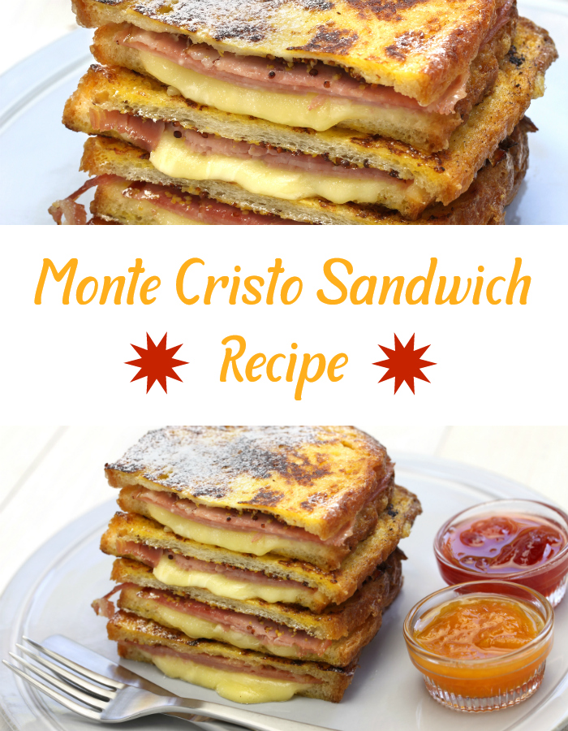

FRENCH TOAST MONTE CRISTO SANDWICH

This French Toast Monte Cristo Sandwich recipe is perfect for brunch.
Monte Cristo sandwiches are basically a cross between grilled cheese and
french toast, with ham added. Think of them as a french toast grilled ham
and cheese.
Ingredients
- 4 white sandwich bread slices
- 1 large egg
- 3oz roasted turkey breast, thinly sliced
- 3oz ham, thinly sliced
- 3oz Emmentaler or other cheese, thinly sliced
- 1/3 cup whole milk
- 2 tsp Dijon mustard
- 2 tbsp unsalted butter
- Kosher salt and freshly ground black pepper to taste
- Red currant jelly, and peach jelly for serving
- Powdered sugar, for dusting
Steps
- Pour the milk in a shallow dish and crack the egg into it.
-
Sprinkle a dash of seasonings into the mixture and whisk it thoroughly
until the ingredients blend together to form a uniform, pale yellow
mixture; set aside.
- Take 2 bread slices and smother one side with 1 tsp of mustard.
-
Top it up with turkey as well as ham slices and pile up half of the
cheese over them.
-
Place another slice of bread over the final layer of cheese on top of
each mustard-coated and give each sandwich a gentle press to make them
more compact.
-
Add a knob of butter into a large skillet and melt it over moderately
low heat, until it foams.
-
Dip a sandwich into the whisked mixture and flip it over to coat either
side well with the latter.
- Place it onto the skillet and coat the other sandwich similarly.
-
Fry both of them for about 4-5 minutes, untouched, until they turn
golden brown and turn them over to fry the other side in a similar
fashion.
-
Once the cheese melts, slide the sandwiches onto serving plates and
sprinkle powdered sugar on top.
-
Add a dollop of red currant jelly and peach jelly (or jelly of choice)
beside each sandwich and serve right away.